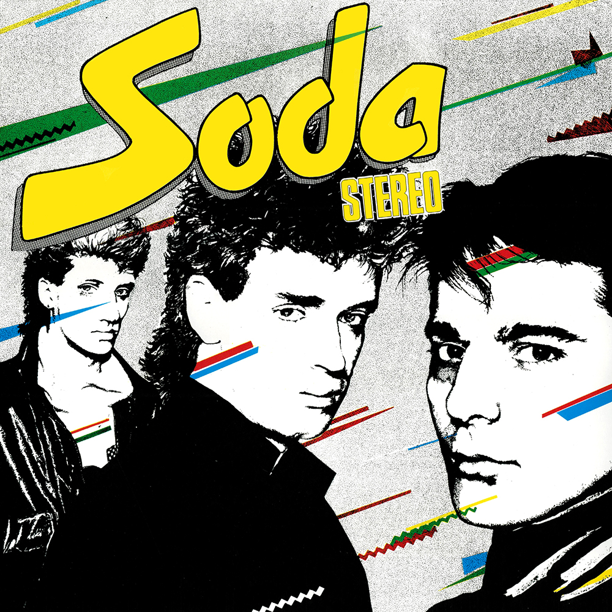
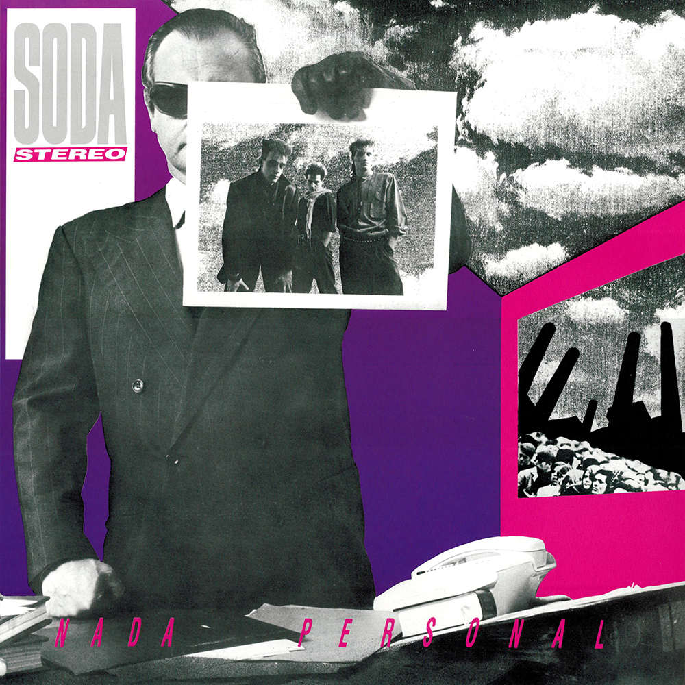
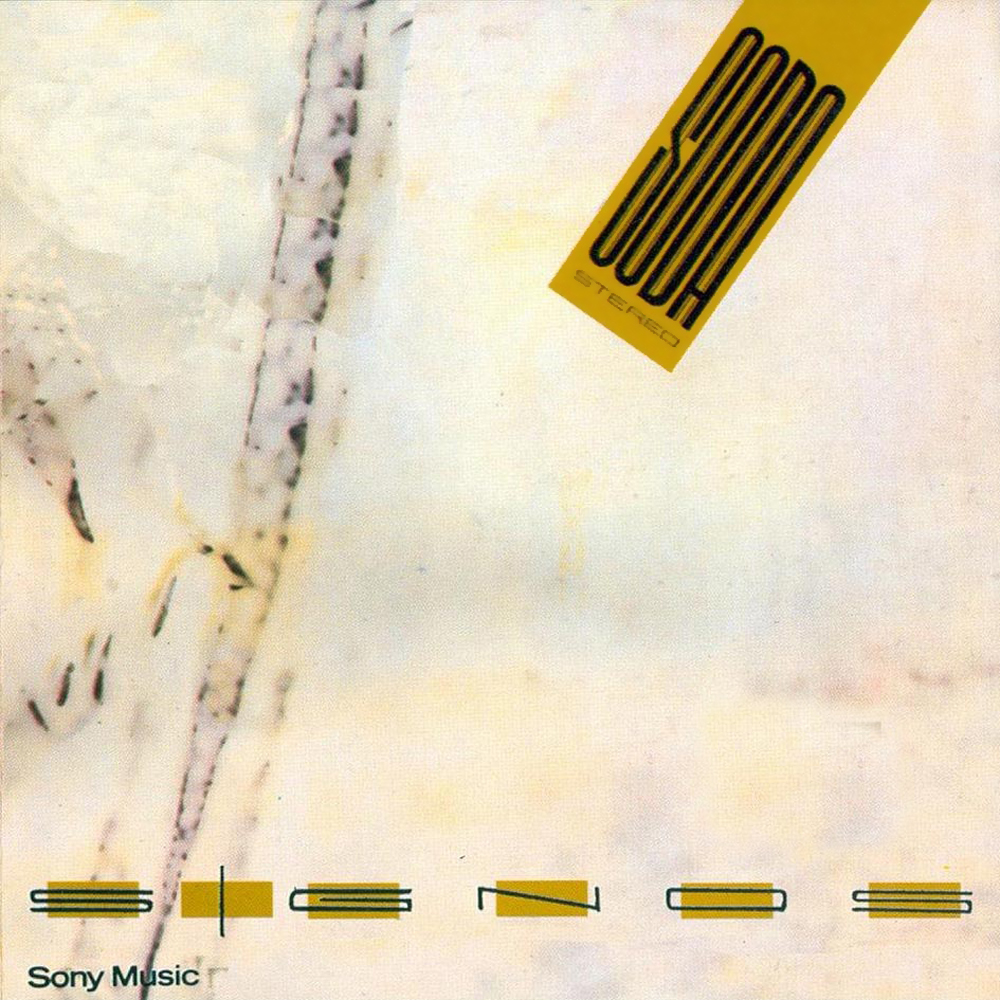
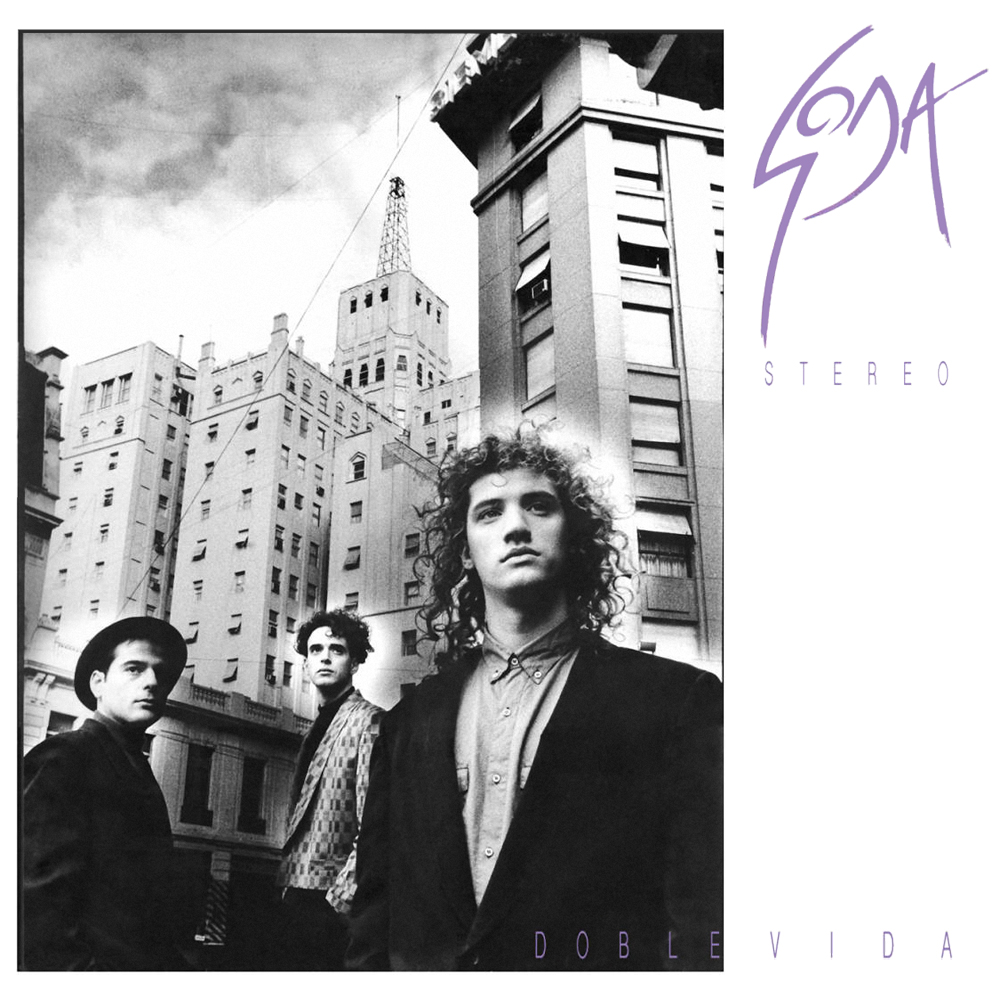

Biografía
Soda Stereo fue una banda de rock argentina formada en 1982 originalmente por el cantante y guitarrista Gustavo Cerati, el bajista Zeta Bosio y el baterista Charly Alberti. Es considerada por un sector de la crítica especializada como la banda más importante, popular e influyente del rock en español y una leyenda de la música latinoamericana. Fueron el primer grupo de habla hispana en conseguir un éxito masivo en Latinoamérica y tuvieron un papel muy importante en el desarrollo y la difusión del rock latinoamericano y el rock en español durante los años 80 y los 90. Durante su carrera, fueron vanguardistas y marcaron tendencia en Latinoamérica, en la que protagonizaron diversos géneros como la música divertida de sus inicios, la new wave, el dark wave, el hard rock, el rock alternativo y el rock electrónico de sus finales. Soda Stereo ha encabezado las listas de todos los tiempos en el mundo, donde se establecieron varios récords de ventas de discos y asistencias a conciertos. Hasta 2007 se cifraban las ventas de la banda en más de siete millones de copias vendidas de sus álbumes; sin embargo, estimaciones más recientes de 2018 discrepan atribuyéndoles más de veinte millones de copias vendidas en todo el mundo.

Gustavo Cerati
Gustavo Adrián Cerati (Buenos Aires, 11 de agosto de 1959-Buenos Aires, 4 de septiembre de 2014) fue un músico, cantautor y productor discográfico argentino que obtuvo reconocimiento por haber sido el líder, vocalista, compositor y guitarrista de la banda de rock Soda Stereo. La prensa especializada y otros músicos lo consideran como uno de los artistas más influyentes del rock latinoamericano. Influenciado por las bandas británicas The Beatles y The Police, Cerati integró diversas agrupaciones desde su adolescencia y en 1982 fundó la banda de rock latino Soda Stereo. Líder y principal compositor del conjunto, a partir de Signos (1986) su forma de hacer canciones comenzó a madurar, y su consolidación la alcanzó a comienzos de los años 1990 con Canción animal, en el que volvía a las raíces del rock argentino de los años 1970. Paralelo a su carrera con el grupo, en 1992 publicó a dúo con Daniel Melero el álbum Colores santos, considerado uno de los primeros en Sudamérica en incluir música electrónica, y al año siguiente, el primero como solista, Amor amarillo. Su gusto por la electrónica lo llevó a incorporarla a sus últimos trabajos con Soda Stereo. Después de la separación de la banda, lanzó Bocanada (1999) y Siempre es hoy (2002), donde mostró más su interés por el género, que manifestó libremente en sus proyectos alternos Plan V y Ocio, con la edición de álbumes y presentaciones que le dieron mayor difusión a este tipo de música.

Charly Alberti
Charly Alberti (nombre completo Carlos Alberto García Moreno), nacido el 27 de octubre de 1963 en Buenos Aires, Argentina, es un famoso baterista y compositor, conocido por ser uno de los miembros fundamentales de la icónica banda de rock Soda Stereo. Considerado uno de los bateristas más importantes de América Latina, su estilo ha sido una parte clave del sonido de la banda, que alcanzó una gran popularidad en toda Hispanoamérica y más allá. Alberti se unió a Soda Stereo en 1982, junto a Gustavo Cerati (voz y guitarra) y Zeta Bosio (bajo), con quienes formó el trío que revolucionó el rock en español. Durante la exitosa carrera de la banda, Charly fue fundamental en la creación de su sonido, aportando no solo su habilidad como baterista, sino también con su estilo particular, que variaba entre el rock, el new wave, y el pop. Alberti participó en todos los discos de la banda, que incluyen álbumes icónicos como "Signos", "Canción Animal", "Doble Vida" y "Canción Animal". Soda Stereo es considerada una de las bandas más influyentes en el mundo del rock en español, y su legado sigue siendo muy relevante hoy en día. Tras la separación de Soda Stereo en 1997, Charly Alberti continuó con su carrera en la música, y fue parte de varios proyectos, tanto en solitario como colaborando con otros artistas.

Zeta Bosio
Zeta Bosio (Carlos Alberto Bosio), nacido el 1 de octubre de 1959 en Buenos Aires, es un bajista y compositor argentino, conocido por ser uno de los miembros fundadores de Soda Stereo, la banda de rock en español más influyente de los años 80 y 90. Junto a Gustavo Cerati y Charly Alberti, formó el trío que marcó un hito en la música latina. Bosio destacó por su estilo único en el bajo, siendo responsable de algunas de las líneas más icónicas de la banda, como en "Te hacen falta vitaminas" y "En el borde". Tras la separación de Soda Stereo en 1997, continuó su carrera con proyectos en solitario y colaboraciones. En 2014, tras la muerte de Cerati, Bosio se unió a Charly Alberti en el proyecto "Soda Stereo: Gracias Totales", una gira homenaje que revivió el legado de la banda. Su impacto como bajista y compositor sigue siendo fundamental en el rock en español.

Álbum: Soda Stereo
Lanzamiento: 27 de agosto de 1984 por Estudio CBS (Buenos Aires, Argentina)
Canciones:
- ¿Por qué no puedo ser tu Jet-Set?
- Sobredosis de T.V.
- Te hacen falta vitaminas
- Tratame suavemente
- Dietético
- Tele-Ka
- Ni un Segundo
- Un misil en mi placard
- El tiempo es dinero
- Afrodisíacos
- Mi novia tiene biceps

Álbum: Nada Personal
Lanzamiento: 21 de noviembre de 1985 por Estudios Moebio (Buenos Aires, Argentina)
Canciones:
- Nada personal
- Si no fuera por..
- Cuando pase el temblor
- Danza rota
- El cuerpo del delito
- Juego de seducción
- Estoy azulado
- Observándonos (Satélites)
- Imágenes retro (Telarañas)
- Ecos

Álbum: Signos
Lanzamiento: 10 de noviembre de 1986 por Discográfica: Sony Music
Canciones:
- Sin sobresaltos
- El rito
- Prófugos
- No existes
- Persiana americana
- En camino
- Signos
- Final caja negra

Álbum: Doble Vida
Lanzamiento: : 15 de septiembre de 1988 por Discográfica: Sony Music
Canciones:
- Pícnic en el 4° B
- En la ciudad de la furia
- Lo que sangra (La cúpula)
- En el borde
- Languis
- Día común - Doble vida
- Corazón delator
- El ritmo de tus ojos
- Terapia de amor intensiva

Álbum: Canción animal
Lanzamiento: : 7 de agosto de 1990 por Discográfica: Sony Music
Canciones:
- (En) El séptimo día
- Un millón de años luz
- Canción animal
- 1990
- Sueles dejarme solo
- De música ligera
- Hombre al agua
- Entre caníbales
- Té para 3
- Cae el sol

Álbum: Dynamo
Lanzamiento: : 26 de octubre de 1992 por Discográfica: Sony Music
Canciones:
- Secuencia inicia
- Toma la ruta
- En remolinos
- Primavera 0
- Camaleón
- Luna roja
- Sweet sahumerio
- Ameba
- Nuestra Fe
- Claroscuro
- Fue
- Texturas

Álbum: Sueño Stereo
Lanzamiento: : 21 de junio de 1995 por Discográfica: Sony Music
Canciones:
- Ella usó mi cabeza como un revólver
- Disco eterno
- Zoom
- Ojo de la tormenta
- Efecto doppler
- Paseando por Roma
- Pasos
- Ángel eléctrico
- Crema de estrellas
- Planta
- X-Playo
- Moirè
Canciónes
Videos
Disfruta en esta sección algunos de los videos con mayores visitas en Youtube
Galería
Fotos destacadas


Últimos conciertos de la banda
- 21 de diciembre de 2007 — Buenos Aires, Argentina — Estadio Monumental (último show de la gira “Me Verás Volver)
- 15 de diciembre de 2007 — Córdoba, Argentina — Estadio Chateau Carreras
- 9 de diciembre de 2007 — Lima, Perú — Estadio Nacional
- 8 de diciembre de 2007 — Lima, Perú — Estadio Nacional
- 4 de diciembre de 2007 — Miami, EE. UU. — American Airlines Arena
- 29 de noviembre de 2007 — Caracas, Venezuela — Hipódromo La Rinconada
- 27 de noviembre de 2007 — Ciudad de Panamá, Panamá — Estadio Nacional Rod Carew
- 24 de noviembre de 2007 — Bogotá, Colombia — Parque Metropolitano Simón Bolívar
- 21 de noviembre de 2007 — Los Ángeles, EE. UU. — Home Depot Center
- 16 de noviembre de 2007 — Ciudad de México, México — Foro Sol